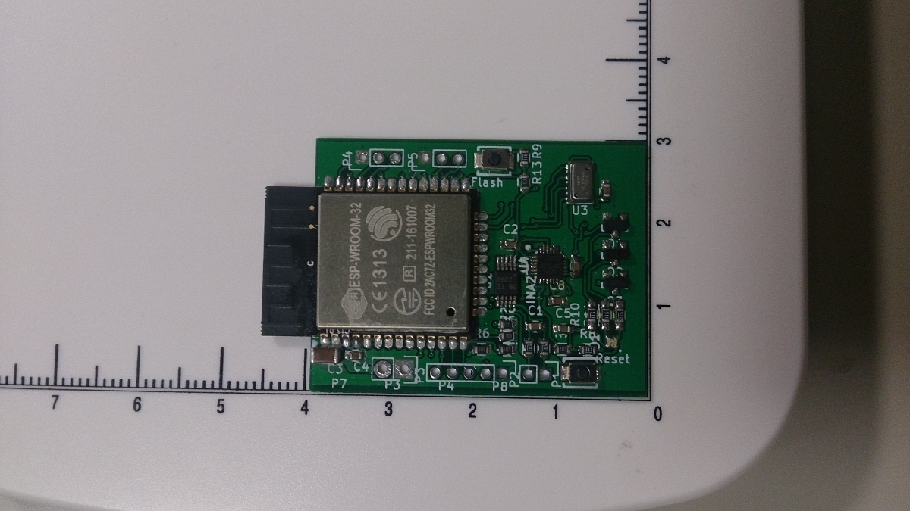
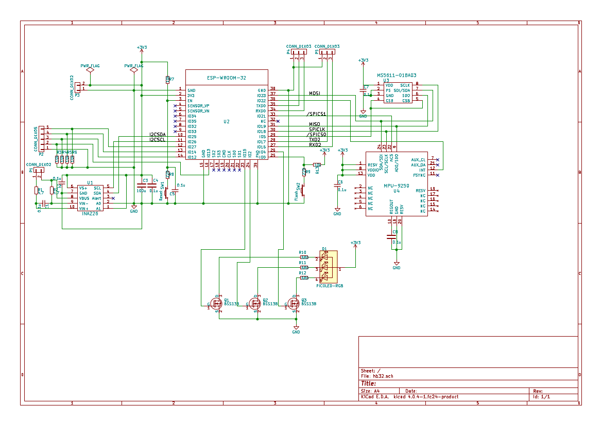

Hachidori which means 'humming bird' is a remote sensor/actuator board controlled by ArduPilot running on PC. It's intended to contribute to ArduPilot, though it's still in the experimental phase. It's a tiny open project of DCoJA started by DroneWorks Inc. I was a contractor with DroneWorks mainly for porting APM to their FC with the mezzanine board of 96boards. Hachidori was a project derived from that work. Although my contract with them ended already, I'm continuing to work with this tiny project individually. The related programs and schematics of hachidori are available as the open sources here.

From hachidori point of view, ArduPilot looks like a UDP server which receives sensor data and sends PWM values back. It's a classical idea, but, yes, there are many issues with this scheme. Anyways, here is a flight test of hachidori with a toy drone frame:
This is a flight in althold. APM runs on a laptop PC with Ubuntu 4.4.0-lowlatency kernel. Looks APM can control the attitude well, though some tune is needed for althold. Also this short test might show the need for some indoor horizontal positioning system.
Another hachidori with a 250 frame and its host PC on which APM runs:


ArduPilot with the experimental hachidori drivers and the other information for hardware/software were maintained at DCoJA's github. See the hachidori branch of ardupilot there if you are interested.
The firmware of the remote side runs on ESP32 and uses esp-idf and can be seen as an application on esp-idf. Other tools like small servers for tests and configurations can be found at junkyard directory of DCoJA as b3test and b3conf.
latency
One big problem of this scheme is latency. As you know, almost usual RF protocols including Wi-Fi don't take care of latency so much. Except Wi-Fi, they are always low power centric and Wi-Fi is throughput centric. It looks that one of the major cause of the latency is re-sending which is not so worth for the real-time sensor data of the physical values.
In the current implementation, the IMU packets are sent every 1ms from hachidori and the PWM values are sent back every 5ms from PC at maximum. The host PC becomes a Wi-Fi AP with hostapd and APM is running on the same linux PC. This reduces latency a little bit. The typical ping value in our tests is 2-3ms, though this easily increases to 5-50ms with a bit tough RF environments.
failsafe on lost connection
Even if the latency can be reduced somehow, another severe issue happens when the connection is lost or almost packets are lost. Currently, hachidori always computes its rough attitude by Madgwick filter. The frame tries to land with a simple attitude control when the connection is lost.
prototype hardware
Although I'm not a hardware expert, I've made some hardwares for proof of concept.

The prototypes have almost same simple hardwares:
- ESP-WROOM-32
- MPU-9250
- MS5611 or 2SMPB02(OMRON's new Baro)
- INA226
The board seen in the frame with coreless motors

is a prototype and its firmware differs slightly from others. The corresponding source of that firmware is the bee3-prototype branch of esp32-app/hachidori and here is its rough schematic

I've tested that frame with ST's VL53L0X module as the range finder. The master branch of that firmware source was planed for another board which wasn't completed.
I'm using MCPWM(Motor Control PWM) module of ESP32 for ESC and LEDC module for coreless motors. ESC is default on the master branch and isn't on bee3-prototype.
The primary purpose of hachidori is to be a tool in the development and education, with tiny indoor copters and rovers. One can run waf/make easily on PC and test the new APM immediately. It's similar with SITL in a sense, though I hope hachidori would give a fun with the real vehicles. I was almost new to the UAV world when starting this work. So I've experienced with many issues like damaged motors/propellers, vibration, ground effect, frame balance, battery problems, magnetic disturbance and so on with the real frame. Sounds great, doesn't it? :-)
Besides many problems, I think it has interesting possibilities. One might be possible to run APM with state of the art processors and try very heavy computational methods which won't work with the usual FC on the frames, ATM.
Happy Hacking,